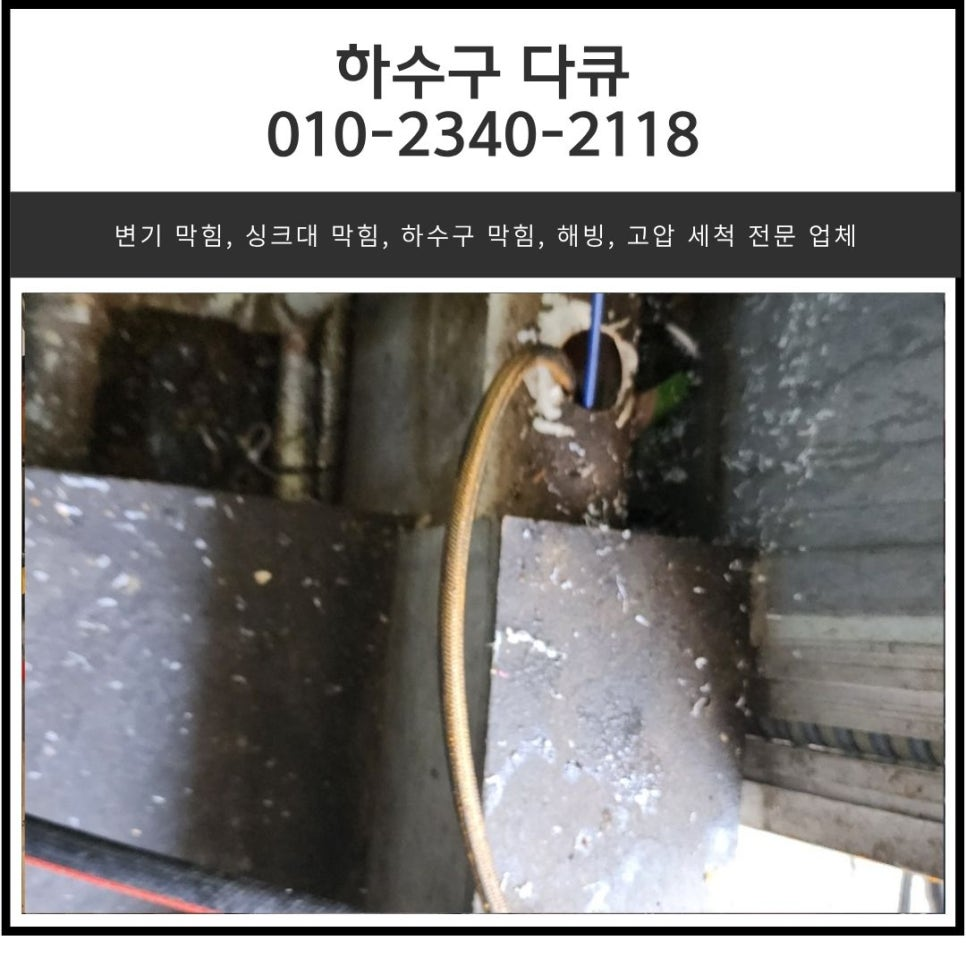
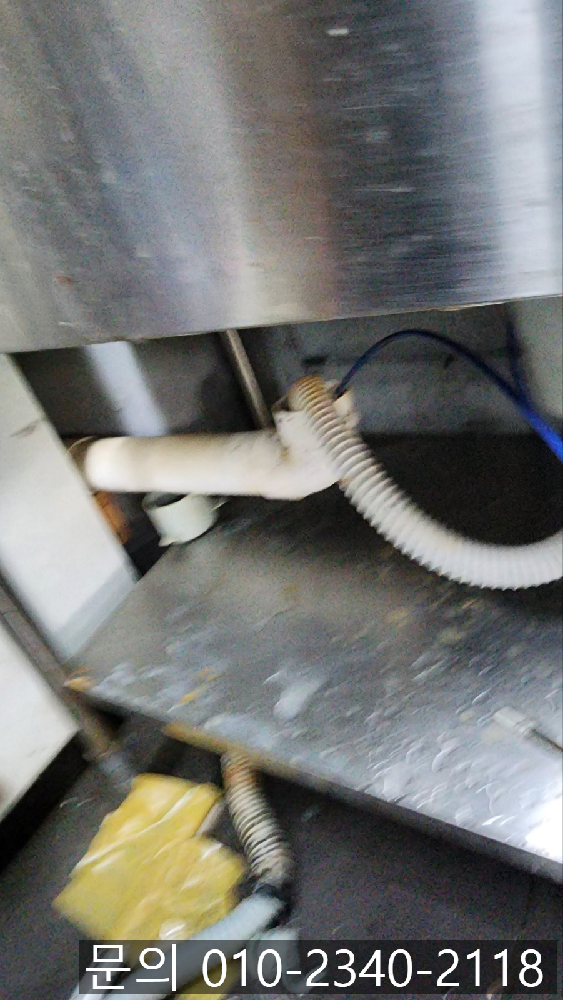
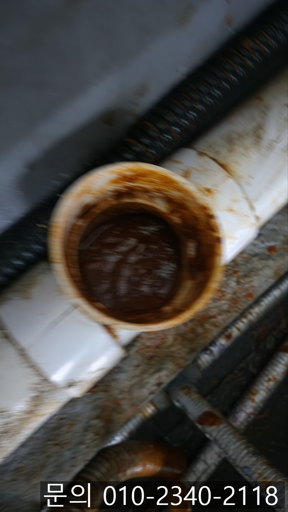

🏠 영천동 싱크대 막힘 동탄동 식당 하수구 역류 막혔을 때 뚫는 방법
화성 영천동 싱크대막힘 전문 시공 후기

📋 작업 개요
- 위치: 화성 영천동, 영천동, 화성
- 서비스 유형: 싱크대막힘, 하수구막힘, 배관막힘, 누수수리, 역류해결, 뚫는업체, 배관청소, 고압세척
- 작업 일시: 2025. 6. 11. 22:50
- 업체명: 하수구수사대 (010-5615-2118)
🔍 문제 상황
안녕하세요.
영천동 싱크대 막힘, 동탄동 식당 하수구 역류 막혔을 때 뚫는 방법을 소개해 드릴 하수구 다큐입니다.
오늘은 영천동 싱크대 막힘으로 한 식당에서 연락을 주셔서 하수구 다큐가 직접 방문해 해결하고 돌아온 사례를 소개해 드릴게요.
요즘같이 더운 날씨에 식당이나 음식점에서 흔하게 겪는 문제 중 하나가 바로 싱크대 막힘인데요.
가정집에서 영천동 싱크대 막힘이 발생하게 되면 물을 사용하기 어려워지면서 불편함을 느끼시겠지만, 식당이나 음식점의 경우 주방이 핵심 공간이다 보니 단순 불편함뿐 아니라 영천동 싱크대 막힘으로 인해 조리 동선도 꼬이고, 악취와 벌레가 꼬이는 등 다양한 문제가 발생하게 되면서 매출 하락으로 이어질 수 있습니다.
오늘은 식당 싱크대가 막혔을 때 발생하는 문제점들에 대해 간단히 정리해 드리고, 하수구 다큐가 직접 다녀온 현장도 소개해 드릴게요.
식당 싱크대 막힘으로 인해 발생되는 문제점
조리 지연

🔎 원인 분석
💡 전문가 진단: 정밀 진단 장비를 사용하여 슬러지의 고착 여부를 판명하고 타격/세척 작업을 실시했습니다.
기본적으로 식당 싱크대 막힘이 발생하게 되면 요리에 필요한 재료를 손질하거나, 사용한 식기를 세척하는 게 어렵다 보니 조리도구, 식기가 부족해지고, 손님들에게 제공될 음식 준비가 늦어지게 되면서 매출 하락으로 이어집니다.
2. 오염
배수가 제대로 이루어지지 않고 역류가 발생하게 되면서 주방 바닥이 오염되고, 미끄러워진 바닥으로 인해 작업자가 넘어지는 사고가 발생할 수도 있습니다.
3. 배관 손상
하수구 막힘이 자주 발생하게 되면 배관 내부 압력이 증가하면서 연결된 부분에서 누수가 발생할 수 있어 더 큰 피해로 이어질 수 있습니다.
가정집과는 다르게 식당의 경우 문제가 훨씬 크게 느껴지는데요.
주기적으로 전문가의 관리를 받으시는 게 가장 좋지만, 그게 어렵다면 문제가 발생했을 때 신속하게 전문가를 섭외해 문제를 해결하시는 게 가장 현명한 방법입니다.
오늘은 동탄동 식당 하수구 막혔을 때, 하수구 다큐가 방문해서 뚫는 방법을 사진과 함께 소개해 드릴게요.

🔧 작업 과정
고객님께서 동탄동 식당 하수구 역류, 막혔을 때 뚫는 방법을 고민하시다가 하수구 다큐의 블로그를 보시고 전화를 주셨습니다.
주방에서 업무가 마비된 상태라 심각하다며 빨리 방문해서 해결해달라고 하셨어요.
고객님께 주소를 전달받아 신속하게 현장으로 출동했습니다.
주방으로 들어가 점검을 시작했는데요.
바닥엔 역류한 오물로 악취가 진동했고, 상태를 보아하니 너무 심각했기 때문에 연결되어 있는 노출배관을 열어보니 예상했던 대로 기름 슬러지로 가득 차 있는 상태였습니다.
주방에 위치한 배관 여러 곳을 내시경 카메라를 사용해 꼼꼼하게 확인해 보니 모든 배관에 기름 슬러지와 음식물 찌꺼기가 오랜 시간 쌓여 꽉 막혀있는 상태였어요.
아무래도 많은 양의 음식을 매일 만들어내다 보니, 조리 과정에서 발생한 기름이나 음식물 찌꺼기 등이 배수구로 흘러들어가고 조금씩 쌓이면서 함께 굳어져 배관을 완전히 막아버린 것 같습니다.
고객님께서도 배관을 꽉 막고 있는 기름 슬러지를 직접 확인해 보시더니 깜짝 놀라시면서 빠르게 제거해달라고 요청하셨어요.
주방에 연결되어 있는 배관들을 점검했을 때, 단순한 막힘이 아닌 건물 밖으로 나가는 메인 배관까지 꽉 막힌 것으로 예상되어 외부로 나가 하수구를 확인해 보기로 했습니다.
건물 밖으로 나가 연결되어 있는 하수구 뚜껑을 열어보니 예상했던 대로 기름 슬러지가 가득 차 있는 상태였습니다.
건물의 메인 배관까지 기름 슬러지로 꽉 막혀있는 상태이다 보니 고객님께 고압세척을 이용해 작업을 진행하겠다고 말씀드리고 금액과 소요시간 등 자세히 설명해 드린 다음 배관 청소 작업을 진행했습니다.
고압세척 장비는 강한 수압을 이용해 배관에 쌓여 굳어있는 이물질과 기름 슬러지를 완벽하게 제거하는 장비입니다.
배관이 크거나 긴 경우 플렉스 샤프트로 청소가 어렵기 때문에 고압세척을 이용하고 있는데요.


✅ 작업 완료
현존하는 배관 청소 장비 중 최고라고 말할 수 있습니다.
내시경 카메라를 이용해 배관 내부의 상태를 파악해가며 여러 차례 반복해서 고압세척을 진행하자 모든 이물질이 제거되고 깨끗해진 배관을 확인할 수 있었습니다.
사진으로 남기지는 못했지만 주방의 배관도 깨끗하게 청소되어 많은 양의 물을 흘려보내면서 막힘이나 역류 등 남아있는 이물질이나 문제는 없는지 테스트까지 꼼꼼하게 진행해 드렸어요.
경기도 화성시 동탄대로 677-10 7층 715-A10호
⚠️ 베란다 누수 및 방수 관리 방법
- ✅ 비가 많이 올 때 창틀 주변이나 아래층 천장에 얼룩이 생기는지 정기적으로 확인해 보세요.
- ✅ 우수관 주변 실리콘 마감이 들뜨거나 깨진 틈새가 있는지 손상 여부를 수시로 체크하세요.
- ✅ 베란다 바닥 타일의 줄눈(메지)이 소실되면 그 틈으로 물이 침투하여 누수가 유발됩니다.
- ✅ 누수 의심 증상 발견 시 방치하면 아래층 손실이 커지므로 즉시 전문가의 진단을 받으십시오.
💡 핵심 정리
- 확실한 장비 작업(내시경 점검 및 샤프트 스케일링)으로 원인을 뿌리 뽑습니다.
- 작업 후 1년 이내에 동일한 부위 재발 시 100% 무상 A/S 서비스를 보장합니다.
- 서울 · 경기 · 인천 전 지역에 24시간 언제든 긴급 출동할 수 있도록 항시 대기 중입니다.
❓ 자주 묻는 질문 (FAQ)
🚨 화성 영천동 싱크대막힘 문제로 고민이신가요?
정확한 원인 진단과 확실한 시공으로 재발 없는 해결을 약속드립니다.
24시간 긴급 출동 | 서울 · 경기 · 인천 전지역 | 1년 내 재발 시 무상 A/S